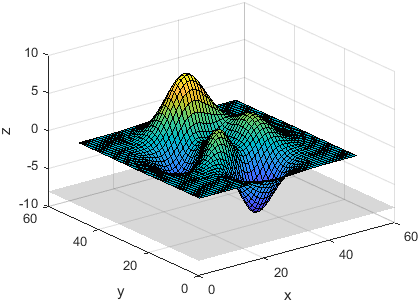
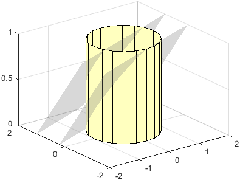
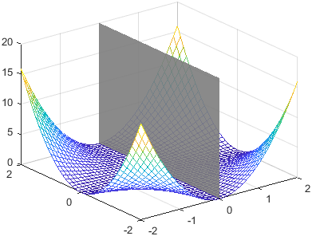
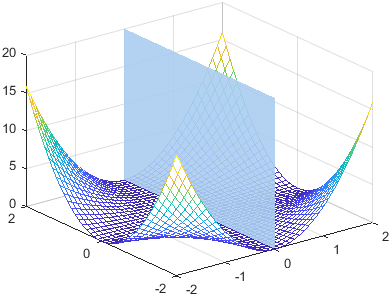
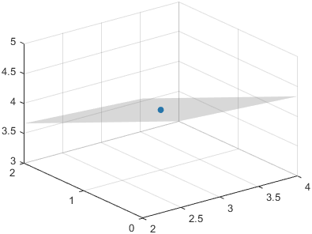
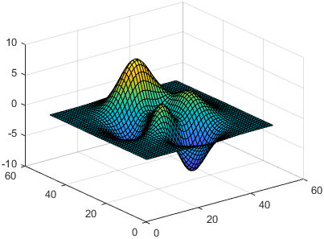
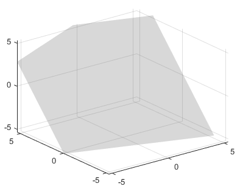

constantplane
Syntax
Description
constantplane(
creates an infinite plane for highlighting slices or regions of 3-D plots. The plane
satisfies the equation ax + by + cz
= d, where the normal vector is [a b c] and the offset
value is d. To create a plane that is perpendicular to the
x-, y-, or z-axis, specify
normal,offset)normal as "x", "y", or
"z". To create a skewed plane, specify normal as a
three-element vector.
To create one plane, specify one normal vector (either
"x","y", or"z", or a three-element vector) and a scalar offset value.To create n planes, specify the normal vectors as the rows of an n-by-3 matrix or the columns of a 3-by-n matrix. Specify the offsets in an n-element vector.
constantplane(
specifies properties of the plane using one or more name-value arguments. For example,
normal,offset,Name=Value)constantplane([1 1 1],1,FaceColor="red") creates a red plane. If you
create multiple planes, the property values apply to all of the planes. For a list of
properties, see ConstantPlane Properties.
constantplane( specifies
the target axes for the plane. Specify ax,___)ax as the first argument in any of
the previous syntaxes.
cp = constantplane(___) returns one or more
ConstantPlane objects. Use cp to set properties of
the planes after creating them. For a list of properties, see ConstantPlane Properties.
Examples
Plot the peaks data set as a surface, and
display the plane z=-8 below the surface.
surf(peaks) constantplane("z",-8) xlabel("x") ylabel("y") zlabel("z")

Plot a cylinder with two planes that cut through the cylinder diagonally. Specify the plane normals as the rows of a 2-by-3 matrix. Specify the offsets as a two-element vector. Then adjust the x- and y-axes limits so you can see more of the planes.
[X,Y,Z] = cylinder;
surf(X,Y,Z,FaceColor=[1 1 0.75])
normal = [-0.2 0.5 1; -0.2 0.5 1];
offset = [0.5 1];
constantplane(normal,offset)
% Adjust x- and y-axes limits
xlim([-2 2])
ylim([-2 2])

You can modify aspects of a plane by setting properties. You can set
properties by specifying name-value arguments when you call
constantplane, or you can set properties later using dot
notation.
For example, plot a surface and a vertical plane. Specify the opacity of the plane
by setting the FaceAlpha name-value argument. Also, specify an output
argument to store the ConstantPlane object.
[X,Y] = meshgrid(-2:0.1:2);
Z = X.^2 .* Y.^2;
mesh(X,Y,Z)
cp = constantplane("x",0,FaceAlpha=0.9);

Modify the appearance further by setting properties of the
ConstantPlane object cp. Change the color to a
shade of blue by setting the FaceColor property to a hexadecimal
color code.
cp.FaceColor = "#ABCDEF";

The plane normal controls the orientation of the plane. Plot the point
p = (3, 1, 4) by calling the scatter3
function. Create a normal vector, and define the offset as the dot product of the normal
vector and the vector that points to p.
p = [3 1 4]; scatter3(p(1),p(2),p(3),"filled") normal = [1 2 3]; offset = dot(normal,p); constantplane(normal,offset) grid on

Plot the peaks data set as a surface.
surfdata = peaks;
surf(surfdata)
hold on

Draw red contour lines that separate regions of the surface that are less than or
equal to 2 from regions that are greater than or equal to
2. Set Zlocation to 2 to
draw the contour lines at an altitude of z=2. Then draw a plane that
cuts through the surface at z=2.
levels = [2 2]; contour(surfdata,[2 2],ZLocation=2,EdgeColor="red",LineWidth=2) constantplane("z",2,FaceAlpha=0.8) hold off

Unlike many plotting functions, constantplane
does not adjust the axes limits to include the plane. To display a plane without any
additional data, calculate a set of axes limits that include part of the plane.
For example, define a normal vector and an offset value for a plane. Then calculate
the distance from the plane to the origin using dist =
2*offset/norm(normal).
normal = [1 3 -2]; offset = 5; dist = 2*offset/norm(normal);
Display the plane, and set the x-, y-, and
z-axes limits to [-2*dist 2*dist].
constantplane(normal,offset)
xlim([-2*dist 2*dist])
ylim([-2*dist 2*dist])
zlim([-2*dist 2*dist])
grid on

Input Arguments
Name-Value Arguments
Specify optional pairs of arguments as
Name1=Value1,...,NameN=ValueN, where Name is
the argument name and Value is the corresponding value.
Name-value arguments must appear after other arguments, but the order of the
pairs does not matter.
Example: constantplane([1 1 1],1,FaceColor="red") creates a red
plane.
Note
The properties listed here are only a subset. For a complete list, see ConstantPlane Properties.
Fill color, specified as an RGB triplet, a hexadecimal color code, or a color name.
For a custom color, specify an RGB triplet or a hexadecimal color code.
An RGB triplet is a three-element row vector whose elements specify the intensities of the red, green, and blue components of the color. The intensities must be in the range
[0,1], for example,[0.4 0.6 0.7].A hexadecimal color code is a string scalar or character vector that starts with a hash symbol (
#) followed by three or six hexadecimal digits, which can range from0toF. The values are not case sensitive. Therefore, the color codes"#FF8800","#ff8800","#F80", and"#f80"are equivalent.
Alternatively, you can specify some common colors by name. This table lists the named color options, the equivalent RGB triplets, and the hexadecimal color codes.
| Color Name | Short Name | RGB Triplet | Hexadecimal Color Code | Appearance |
|---|---|---|---|---|
"red" | "r" | [1 0 0] | "#FF0000" |
|
"green" | "g" | [0 1 0] | "#00FF00" |
|
"blue" | "b" | [0 0 1] | "#0000FF" |
|
"cyan"
| "c" | [0 1 1] | "#00FFFF" |
|
"magenta" | "m" | [1 0 1] | "#FF00FF" |
|
"yellow" | "y" | [1 1 0] | "#FFFF00" |
|
"black" | "k" | [0 0 0] | "#000000" |
|
"white" | "w" | [1 1 1] | "#FFFFFF" |
|
"none" | Not applicable | Not applicable | Not applicable | No color |
This table lists the default color palettes for plots in the light and dark themes.
| Palette | Palette Colors |
|---|---|
Before R2025a: Most plots use these colors by default. |
|
|
|
You can get the RGB triplets and hexadecimal color codes for these palettes using the orderedcolors and rgb2hex functions. For example, get the RGB triplets for the "gem" palette and convert them to hexadecimal color codes.
RGB = orderedcolors("gem");
H = rgb2hex(RGB);Before R2023b: Get the RGB triplets using RGB =
get(groot,"FactoryAxesColorOrder").
Before R2024a: Get the hexadecimal color codes using H =
compose("#%02X%02X%02X",round(RGB*255)).
Fill color transparency, specified as a scalar in the range [0,1]. A value of 1 is opaque and 0 is completely transparent. Values between 0 and 1 are partially transparent.
Version History
Introduced in R2024b